Last lecture ended in the Baltic Sea: phosphate from land feeds blooms, blooms use up oxygen, and anoxic sediments release more phosphate. The lasting way to break that loop is to cut what flows in.
Since the 1970s, Swedish towns have built wastewater treatment plants that remove most of the phosphorus and, at large plants, much of the nitrogen before the water reaches the sea.
Today you will learn to:
match a pollutant’s form to a treatment mechanism;
tell transfer from transformation;
calculate sequential stages, which multiply;
track the side effects: oxygen, alkalinity and by-products.
Your tools: precipitation (metals), surfaces, and redox from this week.
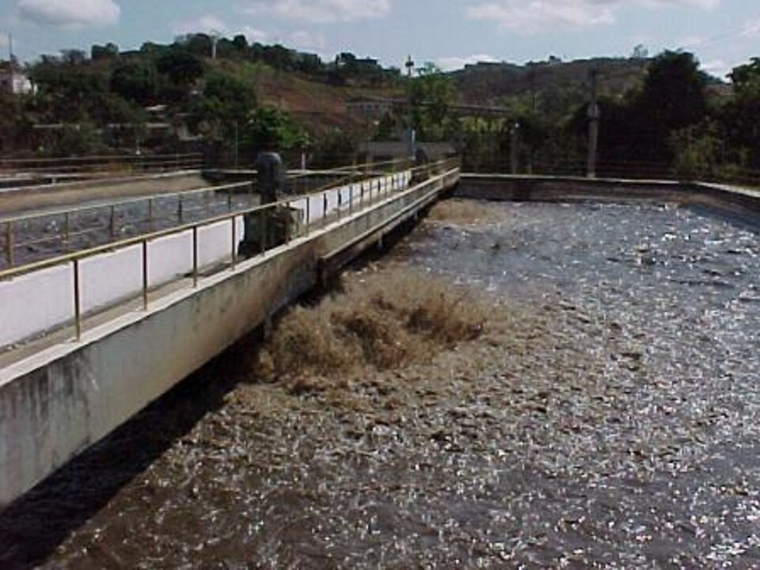
Surface aerator in the aeration tank of an activated sludge plant. Photo: Marcos von Sperling, CC BY-SA 4.0, Wikimedia Commons.
Removed from the water, but where?
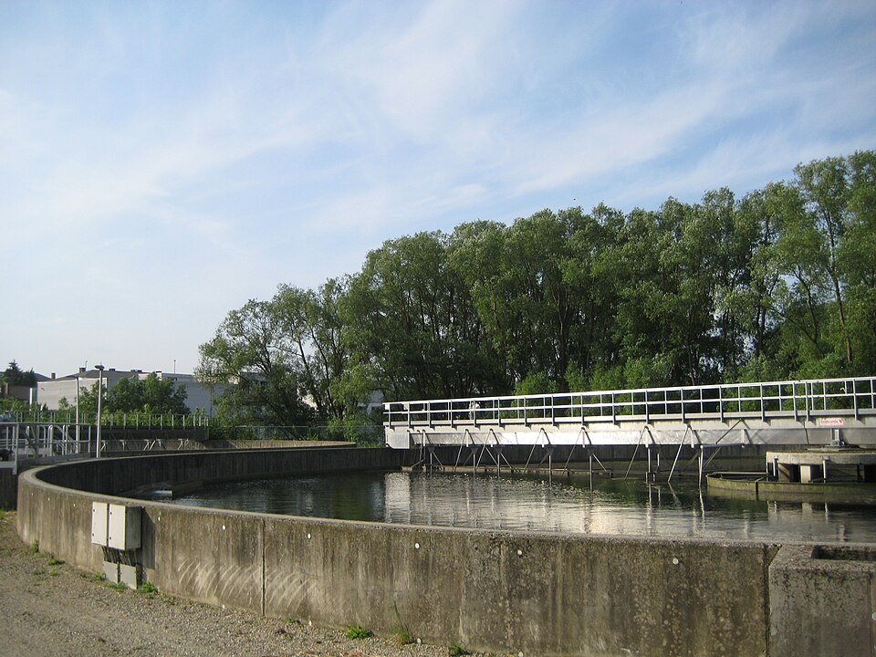
Secondary clarifier at a wastewater treatment plant, Harelbeke, Belgium. Photo: Annabel, CC BY-SA 3.0, Wikimedia Commons.
Each person sends roughly 2 g of phosphorus a day to the sewer. For a city of a million people, that is several hundred tonnes a year.
A modern plant removes well over 90 % of it from the water. But phosphorus is an element. It cannot be destroyed.
Question for this lecture: for each pollutant, which process changes its chemical form, and which only moves it into another stream, such as sludge or gas, that still has to be managed?
Start with the form of the pollutant
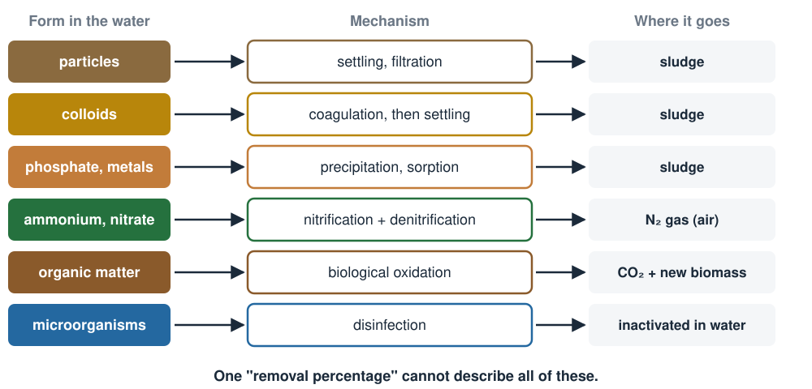
A treatment process works on a form, not on an element. Particles can be settled or filtered; dissolved ions need reaction or sorption; nitrogen needs microbes; microorganisms need disinfection. Every row ends in a destination.
A wastewater treatment train
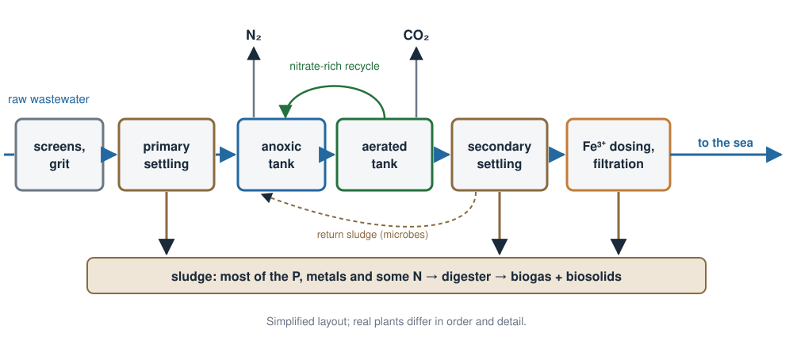
Water passes a series of stages. Each stage sends something out of the water line: grit and sludge to the sludge line, N₂ and CO₂ to the air. The sludge is digested to biogas and stabilised solids.
Transfer or transformation?
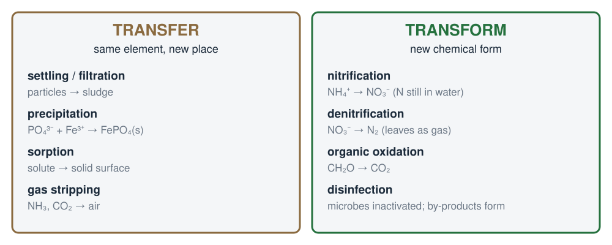
Transfer keeps the element and changes its place: water to sludge, water to air. Transformation changes the chemical form. Only a transformation to a harmless form, or a transfer to a safe, managed stream, counts as treatment.
Coagulation: making colloids settle
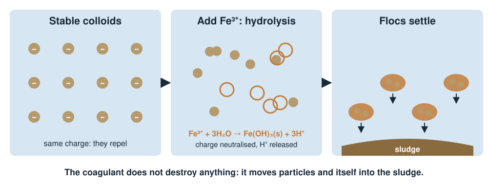
Colloids in water are usually negatively charged and repel each other, so they stay suspended. Adding Fe³⁺ or Al³⁺ produces hydroxide flocs that neutralise the charge and sweep particles together. The flocs settle as sludge.
Each Fe³⁺ releases 3 H⁺. A dose of 0.0200 mmol/L Fe³⁺ gives 0.0600 mmol/L H⁺: alkalinity falls by 0.0600 meq/L.
A hard water hardly notices. A soft water with 0.20 meq/L loses all its alkalinity at about 0.067 mmol/L Fe (3.7 mg/L), and its pH collapses.
Real dosing needs the actual water, but the bookkeeping is the carbonate lecture’s.
Phosphate leaves as a solid
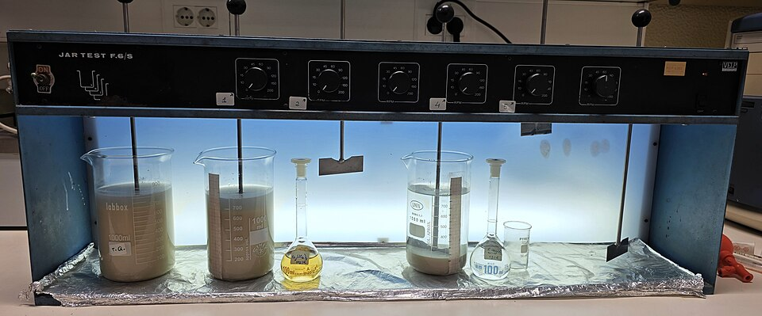
Jar-test stirrer with beakers of sample water, used to compare coagulant doses. Photo: Organic sweet, CC BY-SA 4.0, Wikimedia Commons.
Simplified:
\mathrm{Fe^{3+}+PO_4^{3-}\rightarrow FePO_4(s)}
In practice phosphate is caught in a mixed iron hydroxide–phosphate solid, partly by precipitation and partly by sorption on the fresh hydroxide surface. Plants usually need more than one Fe per P.
Either way, the phosphorus is transferred to sludge. A jar test finds the dose that works for a particular water.
Sequential stages multiply
Each stage acts on what enters it, not on the original amount.
M_{water}=M_0(1-f_1)(1-f_2)
Worked example: 10.0 mg of an element. Stage 1 transfers 60.0 %: 6.00 mg to sludge, 4.00 mg left. Stage 2 transfers 50.0 % of that: 2.00 mg more to sludge, 2.00 mg in the effluent.
Three stages each remove 50 % of what enters. What fraction of the original remains in the water?
A plant turns all its NH₄⁺ into NO₃⁻. Has it removed nitrogen?
Is chemical phosphorus removal a transfer or a transformation? Where does the P go?
How much alkalinity does 0.0500 mmol/L Fe³⁺ consume, if it all forms Fe(OH)₃?
Biological treatment burns organic matter
In the aerated tank, microbes oxidise dissolved organic matter:
\mathrm{CH_2O+O_2\rightarrow CO_2+H_2O}
This is the respiration of the redox lecture, run on purpose. Air is blown in to supply the oxygen; that is a large part of a plant’s energy use.
Part of the carbon leaves as CO₂ (transformation). Part becomes new microbial biomass, which settles as sludge (transfer).
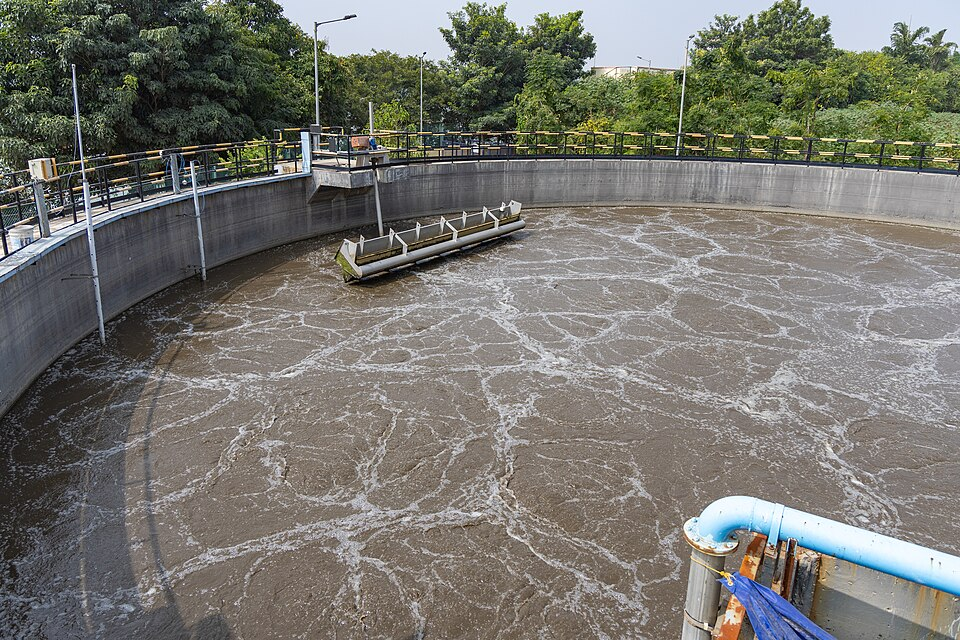
Aeration tank of a sewage treatment plant in Bengaluru, India. Photo: Vraj Acharya, WELL Labs, CC BY-SA 4.0, Wikimedia Commons.
Nitrogen: changing form is not removal
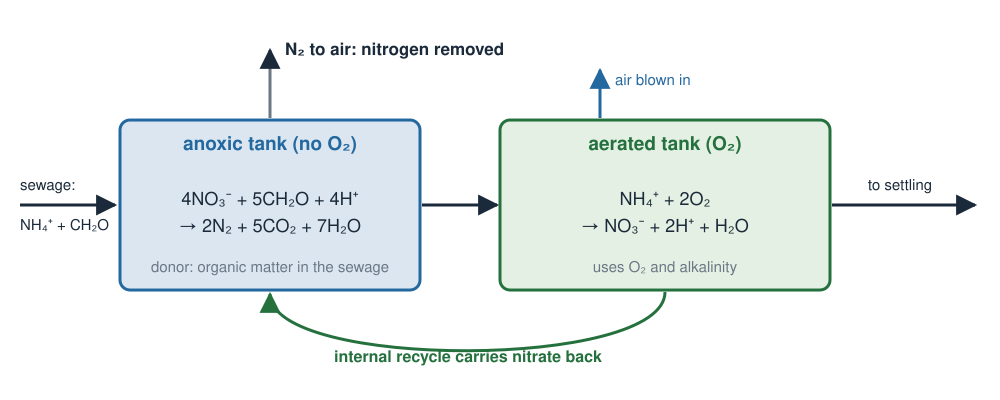
Nitrification (aerated tank) turns NH₄⁺ into NO₃⁻ using 2 O₂ per N; 1.00 mmol/L NH₄⁺ gives 1.00 mmol/L NO₃⁻, still in the water. Denitrification (anoxic tank) turns nitrate into N₂ gas, using organic matter from the sewage as the electron donor.
Disinfection has a different target
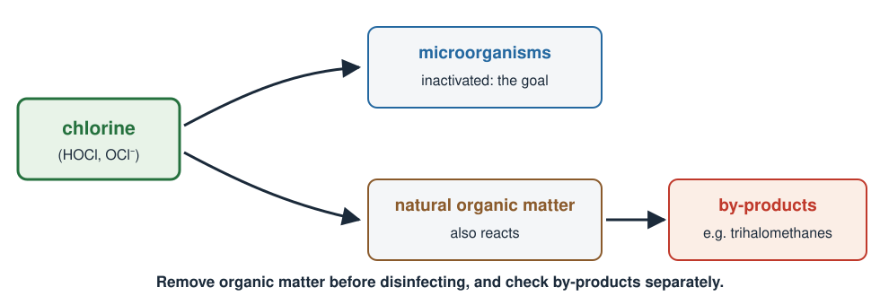
Disinfection inactivates microorganisms; it does not remove dissolved chemicals. Chlorine also reacts with natural organic matter, forming by-products such as trihalomethanes. The target and the side products must be judged separately.
Treatment changes chemistry beyond its target
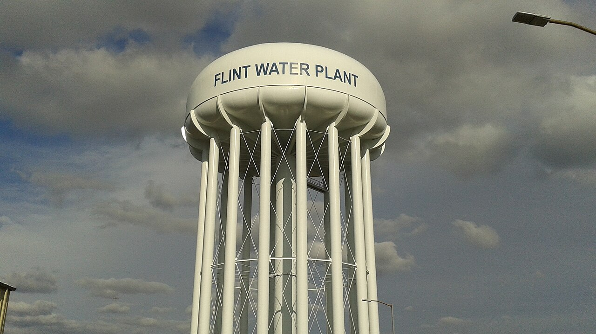
Water tower at the Flint water treatment plant, Michigan. Photo: US EPA, public domain, Wikimedia Commons.
In 2014, Flint, Michigan, switched its drinking-water source to the Flint River and treated it at the city’s own plant, without adding a corrosion inhibitor.
The new water was more corrosive. In homes with lead service pipes, the protective scale inside the pipes was destabilised, and lead levels in tap water rose.
The treatment met its targets for microbes and particles. It failed on the chemistry it did not track.
Why the lead came out
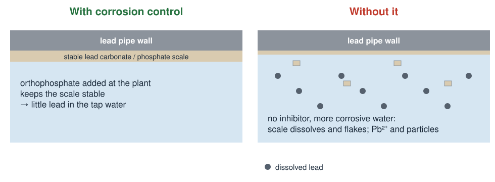
Lead pipes are protected by a thin scale of lead carbonate and phosphate minerals. Its stability depends on pH, alkalinity, chloride and orthophosphate, all set by treatment. Change the water and the scale can dissolve (free Pb²⁺) or flake off (lead particles). This is the metals lecture: the solubility of a solid, controlled by water chemistry.
Back to the phosphorus
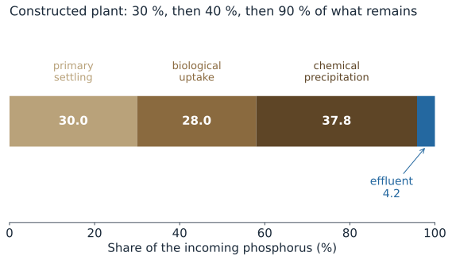
A constructed plant with three stages acting on what is left:
primary settling: 30 % → 70 % left
biological uptake: 40 % → 42 % left
iron precipitation: 90 % → 4.2 % left
Overall 95.8 % transferred, and 95.8 % of the phosphorus is now in sludge. The balance closes: 30.0 + 28.0 + 37.8 + 4.2 = 100.
Sludge: problem and resource
Sludge collects what the water lost: phosphorus and nitrogen, organic matter, and also metals and some persistent organic contaminants that sorb to solids.
As a resource: phosphorus is a limited fertiliser raw material. Sludge can return it to farmland, or P can be recovered from it.
As a risk: metals such as cadmium and sorbing organic pollutants travel with it.
Whether sludge is spread, burned or deposited, the mass balance continues.
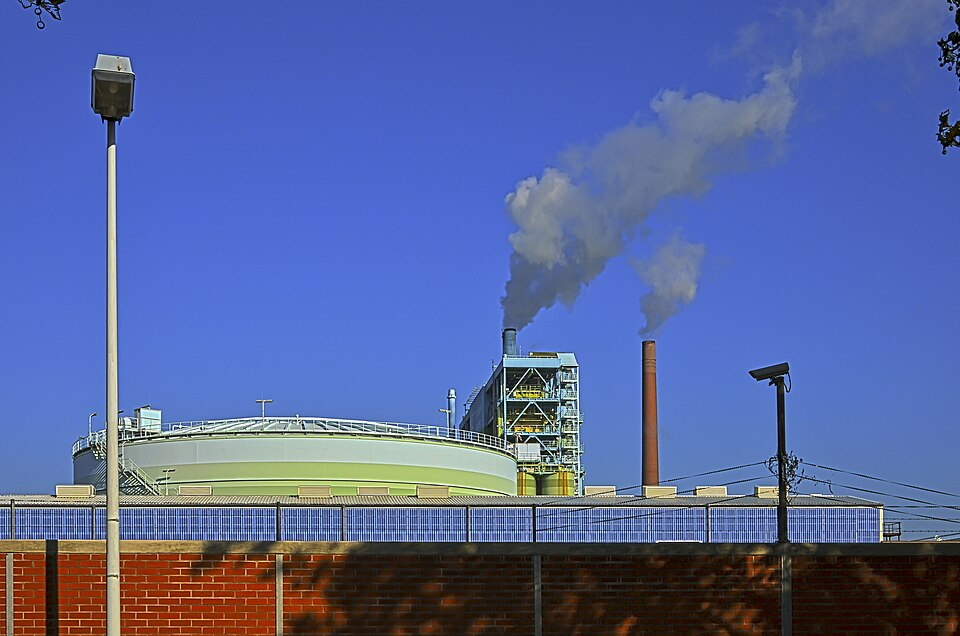
A plant that burns sewage sludge for energy, Industriepark Höchst, Frankfurt, Germany. Photo: Norbert Nagel, CC BY-SA 3.0, Wikimedia Commons.
Common mistakes to avoid
“Removal means destruction.” Most removal is transfer to sludge or gas.
“Add the stage percentages.” Multiply the fractions remaining.
“Nitrification removes nitrogen.” It changes NH₄⁺ to NO₃⁻; denitrification removes N as N₂.
“Filtration treats everything.” Dissolved nitrate and neutral organic molecules pass a filter.
“Disinfection cleans the water chemically.” It targets microbes and can form by-products.
“A coagulant only affects particles.” It consumes alkalinity and changes pH.
Summary
Concept
Key fact
Start with the form
particles, colloids, ions, molecules and microbes need different mechanisms
Transfer vs transform
transfer moves an element to sludge or gas; transformation changes its form
Coagulation
Fe³⁺/Al³⁺ hydroxide flocs neutralise and sweep colloids into sludge
Coagulant acidity
Fe³⁺ + 3H₂O → Fe(OH)₃(s) + 3H⁺: 3 meq alkalinity per mmol Fe
Phosphorus
precipitated and sorbed with iron; moved to sludge, not destroyed